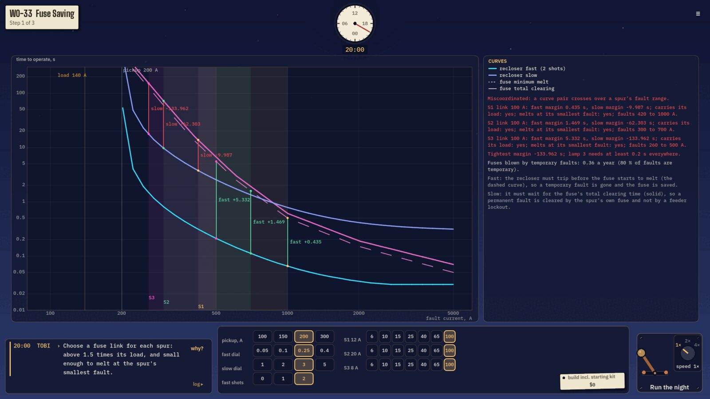

What it teaches. A junior engineer's feeder work: voltage drop down 16 km, SAIFI and SAIDI, recloser and fuse coordination, N-1 at a primary and rooftop solar.
6 jobs: WO-31 to WO-36. All of its jobs are in the classic 2D look for now.

Classic look. WO-33 Fuse Saving: recloser and fuse curves on a time-current chart
WO-31 The Long Feeder Classic look
The Mainland · Brightwater, feeder 3, 20:00
Goal
Brightwater has grown along one 16 km 11 kV feeder of old Weasel wire. At the evening peak the far homes see brown lights. Bring every customer inside 230 V +10 / -6 % at peak and at minimum load, at the least cost.
Budget: $250,000.
Lamps: pass the job; spend at most $220,000; spend at most $210,000 and line losses ≤ 4 %.
If it fails
At the evening peak the customers at N5 get 189.8 V, -17.5 % from 230 V and under the 216.2 V floor (-6 %). Every section drops the voltage, and the far end carries the sum of all the drops.
That is the engine's own sentence for a first-try build that misses. Yours will name your numbers.
On the job board this job is listed under "Other jobs".
On the radio
ADA Every section drops the voltage by about (R P + X Q) / V, and the drops add up. By the last farm there is nothing left of the 11 kV you started with.
VANCE Taps cost nothing and a regulator costs ninety thousand. Wire costs by the kilometre. Show me which of them you really need.
Coach steps (hints that show how to build)
Look at the feeder: read the voltage of each customer at the peak and at minimum load against the band.The far end is the weakest point: its voltage is the substation voltage minus every drop on the way.
Cut the drop: place a regulator in mid-feeder, or put a larger conductor on the first sections.A regulator adds volts at one point; a conductor with less resistance removes the drop and the losses along the whole length.
Trim each distribution transformer's tap so that no one is under -6 % at the peak or over the ceiling at minimum load.A tap shifts one customer by the same amount at peak and at night, so it only fits the spread between them.
Run the day.The feeder is judged at the peak and again at 30 % load.
voltage droprp xqoff load tapregulatorfeeder losses
WO-32 Count the Outages Classic look
The Mainland · Brightwater, control room, year view
Goal
Feeder 3 faults about three times a year and each fault takes the whole feeder dark for the repair. The regulator wants SAIDI under 275 minutes and SAIFI under 1.7. Place up to three sectionalisers, fuse the spurs and decide on a tie to the next feeder, at the least cost.
Budget: $180,000.
Lamps: pass the job; spend at most $162,500; spend at most $161,075 and energy not supplied ≤ 14.65 MWh a year.
If it fails
Each customer would lose supply 3.23 times a year (limit 1.7) for 774 min in all (limit 275); CAIDI 240 min. The feeder sees 3.22 faults a year and section T2 alone costs 144 min of SAIDI: a fault there takes everything downstream of the last fuse or switch.
That is the engine's own sentence for a first-try build that misses. Yours will name your numbers.
On the job board this job is listed under "Other jobs".
On the radio
ADA SAIFI counts how often, SAIDI how long, CAIDI how long each time. Faults on a 21 km line are not rare: they are a certainty. The only choice is how many people each one reaches.
TOBI A remote switch opens in minutes and a manual one needs a crew in a van. The regulator does not count anything under five minutes.
Coach steps (hints that show how to build)
Fuse every spur so a spur fault does not take the trunk down.A fuse isolates a faulted spur at once; customers on the trunk see only a flicker.
Place a sectionaliser on the long trunk: manual is cheap, remote restores within five minutes.A switch lets the crew isolate the faulted section and restore the rest before the repair is done.
Decide on the tie to the next feeder.A normally open tie feeds the customers beyond a fault from the other side while the crew repairs.
Run the year.The indices are expected values: failure rate times length times the customers that fault reaches.
saifisaidicaidisectionaliserfusetie switch
WO-33 Fuse Saving Classic look
The Mainland · Brightwater, feeder 3 protection
Goal
A recloser heads feeder 3, and three spurs hang off it, each behind a fuse link. About 80 % of overhead faults are temporary. Set the recloser and size the fuses so a temporary fault is cleared before any fuse melts, and a permanent one is cleared by the spur's own fuse and nobody else's.
Lamps: pass the job; the card says what the second and third ask for.
If it fails
A permanent fault on spur S1 drew 420 A. The recloser's slow curve operates in 3.745 s but the 100 K fuse needs 13.732 s to clear it, so the recloser locked out first and 1000 customers lost supply for one spur's fault.
That is the engine's own sentence for a first-try build that misses. Yours will name your numbers.
On the job board this job is listed under "Other jobs".
On the radio
ADA A recloser trips fast, waits, and tries again. If the fault was a branch in the wire, it is gone and the lights come back. If not, the fuse downstream must be the one to give up.
VANCE A fuse blown for a gust of wind is a crew on overtime. Make the recloser faster than the fuse for the first try and slower for the last.
Coach steps (hints that show how to build)
Choose a fuse link for each spur: above 1.5 times its load, and small enough to melt at the spur's smallest fault.A fuse has a minimum melt curve and a total clearing curve, and the fault current changes along the spur.
Set the recloser: pickup above the feeder load, a fast time dial, a slow time dial and the number of fast shots.The fast curve must beat the fuse's minimum melt, the slow curve must lose to its total clearing.
Fault the feeder.Every spur is tried with a temporary fault and a permanent one across its whole current range.
The Mainland · Brightwater primary substation, 18:00, 40 C
Goal
Brightwater's primary substation has two 20 MVA transformers and a 36.5 MVA hot-day peak. The yard has no room for a third bay; the units can be swapped for 24 MVA ones. Lose one at the peak and the other must carry the town. After the worst transformer trip, restore all load within 3 hours with no transformer past its 140 C hot-spot limit, at the least cost.
Budget: $830,000.
Lamps: pass the job; spend at most $750,000 and transformer life lost ≤ 7 days; the third needs the same spend and transformer life lost ≤ 3.5 days.
If it fails
With one transformer out at the 36.5 MVA peak the firm capacity is 20 MVA, so the survivor ran at 1.5 times its rating and its hot-spot reached 170.2 C at 21:45, over the 140 C emergency limit. Its own protection tripped it and the whole substation went dark.
That is the engine's own sentence for a first-try build that misses. Yours will name your numbers.
On the job board this job is listed under "Other jobs".
On the radio
ADA Firm capacity is what is left after the biggest unit trips. Two 20 MVA transformers are 40 MVA when both live and 20 MVA when it matters.
TOBI The oil does not heat at once. A few hours of overload is allowed; ageing doubles with every 6 degrees of hot-spot. Spend the 4 hours well.
Coach steps (hints that show how to build)
Read the firm capacity: the substation's capacity with the largest transformer out, against the peak.N-1 is judged at the peak, on the survivors alone.
Add relief: bigger units, a tie to the next substation and demand response. No one of them is enough on its own.Every MVA moved off the survivor cools it, and the hot-spot is what ages and trips a transformer.
Trip the transformer.The oil temperature follows the load with a time constant of hours: the thermometer tells you the outcome.
firm capacityn 1hot spotageing rateload transfer
WO-35 Sun on the Roofs Classic look
The Mainland · Brightwater, feeder 5, noon
Goal
The council has 3 MW of rooftop solar waiting on feeder 5, and promised at least 1 MW. At noon the sun pushes power back up the feeder and the voltage rises; in the evening the feeder sags. Keep every customer inside 230 V +10 / -6 % at noon and at the evening peak.
Budget: $33,000.
Lamps: pass the job; spend at most $19,000 and fix the voltage with kit, not with a lower solar limit; spend at most $8,000 and host ≥ 3000 kW of rooftop solar.
If it fails
At light load (night, or noon with the roof PV exporting) the customers at N5 get 255.2 V, 11 % from 230 V and over the 253 V ceiling. A tap or a set-point that cures the evening dip lifts the quiet hours too.
That is the engine's own sentence for a first-try build that misses. Yours will name your numbers.
On the job board this job is listed under "Other jobs".
On the radio
ADA A feeder was built to deliver power down it, so the voltage falls along it. Put generation at the far end and the flow reverses: now the voltage rises toward the roofs.
NIA Hosting capacity is how much solar the wire takes before somebody's voltage goes over the ceiling. We can raise it with a better tap changer, smarter inverters or more copper.
Coach steps (hints that show how to build)
Set the PV connection limit: the council promised at least 1 MW.The connected PV is what pushes the noon voltage up.
Control the voltage: the tap changer set point with line-drop compensation, and volt-var on the inverters.The same wire must keep the evening peak above the floor and the noon export below the ceiling.
Run noon and the evening.Both snapshots are judged: noon with 30 % load and full sun, and the evening peak with none.
reverse flowvoltage risehosting capacityoltc ldcvolt var
WO-36 Exam Bridge: Feeder Numbers Classic look
The Mainland · The exam hall, 10:00
Goal
A small 11 kV feeder is on the board with its wire, loads, failure rate and switches. Before the run, predict the far-end voltage drop in percent, SAIFI and SAIDI in minutes, and name the equation that governs the drop.
Lamps: pass the job; the card says what the second and third ask for.
If it fails
The exam wants all three predictions (drop, SAIFI and SAIDI) before the run; you made 0.
That is the engine's own sentence for a first-try build that misses. Yours will name your numbers.
On the job board this job is listed under "Other jobs".
On the radio
ADA No design this time. You have the givens, a pencil and the formulas. Work out what the feeder will do before it does it.
VANCE An engineer who cannot estimate a voltage drop on the back of an envelope is guessing with the customers' money.
Coach steps (hints that show how to build)
Predict the far-end voltage drop in percent: for each section, (R P + X Q) / V^2, summed.Power through a section is everything downstream of it, so the first sections carry the most.
Predict SAIFI and SAIDI: a fault reaches every customer between the nearest protective devices; repair time or switching time sets the minutes.SAIFI = customers interrupted / customers served, SAIDI = customer-minutes / customers served.
Choose the equation that governs the voltage drop.A feeder's voltage drop depends on both the resistive and the reactive part of the load.
Run the feeder.The engine will answer with the numbers your predictions will be scored against.